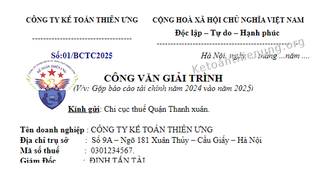

Những quy định về điều kiện xin gộp Báo cáo tài chính. Mẫu công văn xin gộp Báo cáo tài chính, Quyết toán thuế TNDN vào năm sau. Thời hạn nộp công văn xin gộp BCTC, Quyết toán thuế.
Điều kiện xin gộp Báo cáo tài chính, kỳ tính thuế:
Theo điều 3 Thông tư 78/2014/TT-BTC quy định về việc gộp kỳ Quyết toán thuế TNDN:
"2. Kỳ tính thuế được xác định theo năm dương lịch. Trường hợp doanh nghiệp áp dụng năm tài chính khác với năm dương lịch thì kỳ tính thuế xác định theo năm tài chính áp dụng. Kỳ tính thuế đầu tiên đối với doanh nghiệp mới thành lập và kỳ tính thuế cuối cùng đối với doanh nghiệp chuyển đổi loại hình doanh nghiệp, chuyển đổi hình thức sở hữu, sáp nhập, chia, tách, giải thể, phá sản được xác định phù hợp với kỳ kế toán theo quy định của pháp luật về kế toán.
3. Trường hợp kỳ tính thuế năm đầu tiên của doanh nghiệp mới thành lập kể từ khi được cấp Giấy chứng nhận đăng ký doanh nghiệp hoặc Giấy chứng nhận đầu tư và kỳ tính thuế năm cuối cùng đối với doanh nghiệp chuyển đổi loại hình doanh nghiệp, chuyển đổi hình thức sở hữu, hợp nhất, sáp nhập, chia, tách, giải thể, phá sản có thời gian ngắn hơn 03 tháng thì được cộng với kỳ tính thuế năm tiếp theo (đối với doanh nghiệp mới thành lập) hoặc kỳ tính thuế năm trước đó (đối với doanh nghiệp chuyển đổi loại hình doanh nghiệp, chuyển đổi hình thức sở hữu, hợp nhất, sáp nhập, chia, tách, giải thể, phá sản) để hình thành một kỳ tính thuế thu nhập doanh nghiệp. Kỳ tính thuế thu nhập doanh nghiệp năm đầu tiên hoặc kỳ tính thuế thu nhập doanh nghiệp năm cuối cùng không vượt quá 15 tháng."
Theo Công văn số 2732/CT-TTHT ngày 18/1/2018 của Cục Thuế TP. Hà Nội:
"Căn cứ các quy định trên, trường hợp Công ty mới thành lập, được cấp Giấy chứng nhận đăng ký doanh nghiệp ngày 28/11/2017 thì Công ty được cộng với kỳ tính thuế năm tiếp theo (2018) để hình thành một kỳ tính thuế thu nhập doanh nghiệp.
Nội dung vướng mắc về gộp niên độ kế toán không thuộc thẩm quyền giải quyết của Cục Thuế TP Hà Nội, đề nghị Công ty liên hệ với Vụ chế độ Kế toán và Kiểm toán - Bộ Tài chính để được hướng dẫn cụ thể."
Căn cứ vào khoản 4 điều 12 Luật kế toán số 88/2015/QH13 quy định về việc gộp kỳ kế toán:
"4. Trường hợp kỳ kế toán năm đầu tiên hoặc kỳ kế toán năm cuối cùng có thời gian ngắn hơn 90 ngày thì được phép cộng với kỳ kế toán năm tiếp theo hoặc cộng với kỳ kế toán năm trước đó để tính thành một kỳ kế toán năm; kỳ kế toán năm đầu tiên hoặc kỳ kế toán năm cuối cùng phải ngắn hơn 15 tháng."
---------------------------------------------------------------------------------------------
Thời hạn nộp Công văn xin gộp BCTC, Quyết toán thuế TNDN là trước thời hạn nộp Báo cáo tài chính của năm xin gộp.
VD: DN bạn xin gộp BCTC năm 2024 vào năm 2025 thì hạn chậm nhất là trước ngày 30/3/2025.
- Các bạn làm 2 bản mang lên nộp cho bộ phận 1 cửa tại Chi cục thuế quản lý DN.
--------------------------------------------------------------------------------------------------
Mẫu Công văn xin gộp Báo cáo tài chính, Quyết toán thuế TNDN:
| CÔNG TY KẾ TOÁN DIỆU TÂM | CỘNG HOÀ XÃ HỘI CHỦ NGHĨA VIỆT NAM |
|
------------------------------------ |
Độc lập – Tự do – Hạnh phúc |
|
Số:01/BCTC2025 |
Hà Nội, ngày .... tháng ...năm .... |
CÔNG VĂN GIẢI TRÌNH
(V/v: Gộp báo cáo tài chính năm 2024 vào năm 2025)
Kính gửi: Chi cục thuế Quận Thanh xuân.
Tên doanh nghiệp : CÔNG TY TNHH TƯ VẤN & ĐÀO TẠO DIỆU TÂM
Địa chỉ trụ sở : Số 9A – Ngõ 181 Xuân Thủy – Cầu Giấy – Hà Nội
Mã số thuế : 0301234567.
Giám Đốc : ĐINH TẤN TÀI.
Công ty chúng tôi thành lập ngày 24/10/2024, tính đến hết ngày 31 tháng 12 năm 2024 công ty chúng tôi có thời gian hoạt động chưa tới 90 ngày.
Căn cứ vào khoản 4 điều 12 Luật kế toán số 88/2015/QH13:
"4. Trường hợp kỳ kế toán năm đầu tiên hoặc kỳ kế toán năm cuối cùng có thời gian ngắn hơn 90 ngày thì được phép cộng với kỳ kế toán năm tiếp theo hoặc cộng với kỳ kế toán năm trước đó để tính thành một kỳ kế toán năm; kỳ kế toán năm đầu tiên hoặc kỳ kế toán năm cuối cùng phải ngắn hơn 15 tháng."
Căn cứ theo khoản 2, 3 điều 3 Thông tư 78/2014/TT-BTC, ngày 18/06/2014 của Bộ tài chính:
"3. Trường hợp kỳ tính thuế năm đầu tiên của doanh nghiệp mới thành lập kể từ khi được cấp Giấy chứng nhận đăng ký doanh nghiệp có thời gian ngắn hơn 03 tháng thì được cộng với kỳ tính thuế năm tiếp theo (đối với doanh nghiệp mới thành lập) để hình thành một kỳ tính thuế thu nhập doanh nghiệp. Kỳ tính thuế thu nhập doanh nghiệp năm đầu tiên không vượt quá 15 tháng."
Vì vậy, Công ty chúng tôi làm công văn này xin Chi Cục Thuế Quận Cầu Giấy cho Công ty gộp Báo cáo tài chính và Quyết toán thuế TNDN năm 2024 vào Báo cáo tài chính và Quyết toán thuế TNDN năm 2025.
Công ty chúng tôi xin cam kết vào năm 2025 Công ty sẽ báo cáo đầy đủ như đã thông báo ở trên..
| Nơi nhận: | Người đại diện theo pháp luật |
|
- Như kính gửi - Lưu VT |
(Ký và ghi rõ họ tên) |
------------------------------------------------------------------------------------------------------------------
Trường hợp bạn không tải về được thì làm theo cách sau:
Bước 1: Comment mail vào phần bình luận bên dưới
Bước 2: Gửi yêu cầu vào mail: ketoandieutam@gmail.com (Tiêu đề ghi rõ Mẫu sổ muốn tải)
------------------------------------------------------------------------------------------------------------
Tờ khai Quyết toán thuế TNCN có được gộp vào năm sau?
Theo điều 6 Thôn g tư 111/2013/TT-BTC ngày 15/08/2013 quy định Kỳ tính thuế TNCN:
“a) Kỳ tính thuế theo năm: áp dụng đối với thu nhập từ kinh doanh và thu nhập từ tiền lương, tiền công.”
Theo điều 21 Thông tư 92/2015/TT-BTC ngày 15/06/2015 của Bộ tài chính:
"Tổ chức, cá nhân trả thu nhập thuộc diện chịu thuế thu nhập cá nhân đối với thu nhập từ tiền lương, tiền công có trách nhiệm khai quyết toán thuế thu nhập cá nhân và quyết toán thuế thu nhập cá nhân thay cho các cá nhân có ủy quyền không phân biệt có phát sinh khấu trừ thuế hay không phát sinh khấu trừ thuế. Trường hợp tổ chức, cá nhân không phát sinh trả thu nhập thì không phải khai quyết toán thuế thu nhập cá nhân."
"- Thời hạn nộp hồ sơ khai quyết toán thuế chậm nhất là ngày thứ 90 (chín mươi) kể từ ngày kết thúc năm dương lịch."
NHƯ VẬY:
- Hiện nay chưa có văn bản nào quy định việc Quyết toán thuế TNCN được gộp vào năm sau.
- Nếu DN bạn trong năm không trả tiền lương cho nhân viên nào không phải khai Quyết toán thuế TNCN
- Nếu trả lương (Dù có phải nộp thuế TNCN hay không) thì cũng vẫn phải kê khai Quyết toán thuế TNCN (Hạn nộp Tờ khai Quyết toán thuế TNCN chậm nhất là ngày thứ 90 kể từ ngày kết thúc năm dương lịch).
